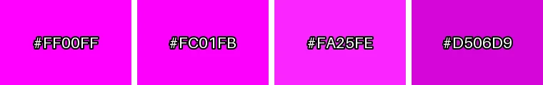
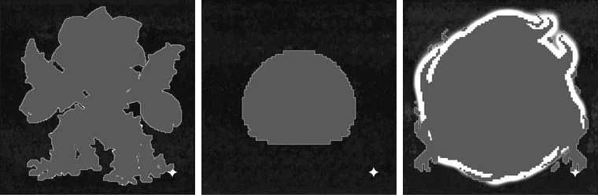

AI 이미지 단색 배경 프롬프트 모음: 나노바나나·GPT 이미지·Midjourney
배경 제거 결과의 절반은 이미지를 만들 때 정해집니다. 배경이 고른 단색이면 가장자리까지 깔끔하게 지워지고, 그림자나 그라데이션이 섞이면 아무리 설정을 만져도 흔적이 남습니다. AI 이미지 도구별로 단색 배경을 얻는 문구와, 자주 실패하는 문구를 정리했습니다.
왜 투명 배경이 아니라 단색 배경으로 만들까
이미지 생성 AI는 대부분 불투명한 그림을 만듭니다. 프롬프트에 “transparent background”라고 적어도 진짜 투명한 PNG가 나오는 것이 아니라, 투명을 뜻하는 회색·흰색 체크무늬를 그림으로 그려 넣는 경우가 많습니다. 이렇게 그려진 체크무늬는 색이 두 가지라 단색 배경보다 지우기 훨씬 어렵습니다.
그래서 게임 스프라이트나 아이콘을 만드는 사람들은 물체에 거의 없는 색(보통 마젠타)을 배경으로 지정해 만든 뒤, 그 색만 지우는 방법을 씁니다. 방송의 크로마키와 같은 원리입니다. 이 방법은 어떤 AI 도구에서나 되고, 수십 장을 한 번에 같은 기준으로 처리할 수 있다는 장점이 있습니다.
요청한 색과 실제로 나온 색은 다르다
나노바나나에 마젠타 배경을 요청해 만든 이미지 세 장의 테두리 색을 직접 재 보았습니다. 요청한 색은 모두 #FF00FF였지만, 실제 배경 중앙값은 #FC01FB, #FA25FE, #D506D9였습니다. 첫 번째는 거의 정확했고, 두 번째는 초록이 37단계 섞였고, 세 번째는 전체적으로 어두웠습니다.

같은 이미지 안에서도 배경은 완전히 고르지 않습니다. 배경 픽셀이 중앙값에서 얼마나 벗어나는지를 12배로 키워 보면, 눈에는 단색으로 보이던 배경에 잔잔한 얼룩이 있고, 정령 캐릭터는 몸 둘레 배경에 빛번짐이 넓게 칠해져 있습니다. 테두리 픽셀의 채널별 표준편차는 1.5~7.3단계였습니다.

이 정도 차이는 문제가 되지 않습니다. BGPeel은 정해진 색을 지우는 것이 아니라 이미지마다 테두리에서 배경색을 다시 재고, 배경 주변의 얼룩과 빛번짐도 배경으로 처리합니다. 중요한 것은 색 값이 정확한지보다 배경에 다른 요소가 없는지입니다.
어느 도구에서나 통하는 원칙
- 색 이름과 색 코드를 같이 적으세요. “solid magenta (#FF00FF) background”처럼 씁니다. 이름만 쓰면 분홍이나 보라 쪽으로 흐르기 쉽습니다.
- 평평하다는 말을 겹쳐 쓰세요. “flat”, “plain”, “uniform”, “single color” 같은 말이 그라데이션과 조명 효과를 줄입니다.
- 바닥과 그림자를 빼 달라고 하세요. 캐릭터를 세워 두면 AI는 바닥에 그림자를 그리려 합니다. “no shadow, no floor, no ground”를 넣으세요.
- 둘레에 여백을 두세요. “centered, full body, with empty space around”처럼 쓰면 물체가 이미지 가장자리에 닿지 않습니다. BGPeel은 테두리에서 배경색을 재기 때문에, 자동 감지에서는 테두리의 4분의 1 이상이 배경이어야 합니다.
- 물체에 거의 없는 색을 고르세요. 대부분 마젠타가 안전합니다. 근거는 배경색 비교 실험에 있습니다.
실패하기 쉬운 문구
| 문구 | 자주 생기는 결과 | 대신 쓸 말 |
|---|---|---|
| transparent background | 체크무늬를 그림으로 그려 넣음 | solid magenta (#FF00FF) background |
| green screen, chroma key | 초록 천이 걸린 촬영장, 바닥, 조명까지 그림 | plain flat green (#00FF00) background |
| white background | 바닥 그림자, 흰 하이라이트가 배경과 붙음 | 흰 물체가 없을 때만 쓰고, 아니면 마젠타 |
| studio lighting, dramatic lighting | 가장자리가 어두워지는 비네팅, 그라데이션 | flat lighting, even lighting |
| glowing, aura | 빛이 배경에 넓게 번짐 | 빛 효과는 물체 안쪽에만 두도록 묘사 |
빛번짐은 BGPeel이 배경과 이어진 것을 꽤 잘 지우지만, 빛 색이 배경색과 많이 다르면 남습니다. 그림자와 그라데이션이 남는 경우는 그림자가 남을 때와 배경이 그라데이션일 때에서 실험 결과와 함께 다룹니다.
나노바나나 (Gemini)
나노바나나는 색 코드를 비교적 잘 따르고, 이미 만든 그림을 대화로 고치는 데 강합니다. 마음에 드는 캐릭터가 나왔는데 배경이 지저분하다면 새로 만들지 말고 “Keep the character exactly the same and change only the background to solid magenta (#FF00FF), no shadow”처럼 배경만 바꿔 달라고 하세요. 같은 캐릭터로 여러 동작을 만들 때도 처음 그림을 참고 이미지로 붙이면 화풍이 덜 흔들립니다.
pixel art goblin warrior, game sprite, full body, centered,
solid flat magenta (#FF00FF) background, no shadow, no floor,
no gradient, empty space around the character나노바나나로 만든 이미지는 오른쪽 아래에 반짝이 모양 마크가 붙습니다. 이 마크가 배경 위에 있으면 BGPeel이 배경과 함께 지웁니다. 자세한 내용은 나노바나나 워터마크 제거를 참고하세요.
GPT 이미지 (ChatGPT, OpenAI API)
OpenAI의 GPT 이미지 모델은 API에서 배경을 투명으로 요청하는 옵션(background를 transparent로, 저장 형식은 PNG나 WebP)을 제공합니다. 한두 장이 필요하고 결과가 마음에 든다면 이 기능으로 충분할 수 있습니다. 다만 투명 처리를 모델에 맡기면 가장자리가 어떻게 처리될지 직접 조절할 수 없고, 같은 세트 안에서도 장마다 가장자리 느낌이 달라질 수 있습니다. 가장자리를 같은 기준으로 맞추고 싶거나 투명 옵션이 없는 화면에서 만든다면 단색 배경으로 만드세요.
A cute slime monster in 16-bit pixel art style, game asset,
front view, centered with generous margins.
Background: one solid flat color, pure magenta #FF00FF,
no shadow, no ground, no texture, no lighting gradient.GPT 이미지는 문장으로 길게 설명해도 잘 따르는 편이라, 배경 조건을 별도 문장으로 분리해 적으면 덜 무시됩니다.
Midjourney
Midjourney는 화풍이 강하게 들어가는 편이라, 단색 배경을 요청해도 조명과 질감을 더하려는 경향이 있습니다. 두 가지를 같이 쓰세요. 하나는 --no 매개변수로 원하지 않는 요소를 빼는 것이고, 다른 하나는 꾸밈을 줄이는 --style raw입니다. 공식 문서에 따르면 --no는 쉼표로 여러 개를 나열할 수 있지만 단어를 하나씩 따로 읽으므로, “--no dark shadow”라고 쓰면 “dark”와 “shadow”를 각각 뺍니다. 짧은 낱말로 쓰는 편이 안전합니다.
pixel art fire spirit, game sprite, centered, full body,
flat solid magenta background, simple, isolated
--no shadow, gradient, texture, vignette, floor --style rawMidjourney는 색 코드를 정확히 맞추는 데 약해서, 마젠타가 진분홍이나 보라로 나오기도 합니다. BGPeel의 자동 감지는 그 색을 그대로 재서 지우므로 괜찮지만, 배경이 탁한 분홍으로 나오면 ‘쨍한 단색’이 아니라 ‘탁한·연한 단색’ 방식으로 처리됩니다. 이 방식은 물체 안에 배경과 비슷한 색이 있으면 함께 지울 수 있으니 결과를 꼭 확인하세요.
만든 뒤 바로 확인할 것
- 물체가 테두리에 닿았나요? 닿은 부분이 넓으면 배경색을 못 찾고 건너뜁니다.
- 발밑에 그림자가 있나요? 짙은 그림자는 검은 덩어리로 남을 수 있습니다.
- 모서리가 어둡거나 한쪽 색이 바뀌었나요? 그라데이션은 남는 경우가 있습니다.
- 배경색이 물체에도 쓰였나요? 물체 색이 배경과 가까우면 깎일 수 있습니다.
네 가지 모두 괜찮다면 BGPeel에 폴더째 올려 한 번에 지우면 됩니다.